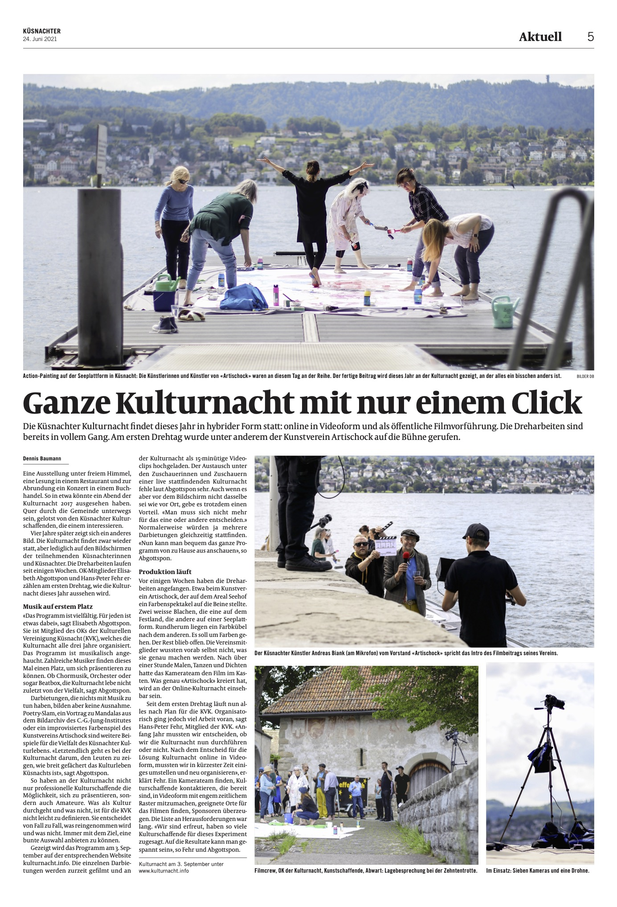

Info
Die Kulturnacht Küsnacht können Sie am Freitag, 3. September 2021 auf zwei Arten geniessen:
Öffentliche Filmvorführung im reformierten Kirchgemeindehaus Küsnacht
Einige der Filme, die in diesem Sommer eigens für die Kulturnacht produziert worden sind, werden
öffentlich gezeigt. Es gibt drei einstündige Vorführungen mit jeweils unterschiedlichen Beiträgen. Der
Zürcher Slam Poet Simon Chen wird den Anlass moderieren. Für das kulinarische Wohl sorgt ein kleiner
Bistrobetrieb.
Ticketreservation unter Tickets
Filme online
Am Freitag, 3. September ab 18 Uhr können die einzelnen Darbietungen unter Filme
online angeschaut werden.
Tickets
Für die öffentlichen Filmvorführungen bitte Tickets bei Eventfrog über folgenden Link buchen:
Der Eintritt ist frei.
Die Filmvorführungen beginnen um 18 Uhr, 19.30 Uhr und 21 Uhr und dauern 60 Minuten. Es werden jeweils vier unterschiedliche Filme gezeigt. Der Zürcher Slam Poet Simon Chen moderiert die Vorführungen.
Ort: Reformiertes Kirchgemeindehaus, Untere Heslibachstr. 5, 8700 Küsnacht
Möchten Sie vor oder nach der Vorführung einen kleinen Imbiss geniessen? Meerzyyt bietet Fleisch und Vegetarisches vom Grill.
Die zum Zeitpunkt des Anlasses geltenden Covid-19 Vorgaben werden eingehalten.
Filme
Ab dem 3. September 2021, 18 Uhr, können Sie die Kulturnacht Küsnacht hier online sehen.
Die Kulturnacht präsentiert eine bunte Palette des Küsnachter Kulturlebens. Das Angebot reicht von Musik, Theater, Performances und Tanz bis zu Lesungen und Führungen. Alle Darbietungen wurden eigens für die Kulturnacht Küsnacht in unterschiedlichen Lokalitäten und ganz im Sinne einer Live-Aufführung gefilmt.
Herzlichen Dank für die Produktion der Filme an effekte.ch und an unsere Veranstaltungspartner:
Artischock | Bibliothek Küsnacht | C.G. Jung-Institut Bildarchiv | Familienzentrum Küsnacht |
Frauenverein Küsnacht | Galerie im Höchhuus | Katholische Kirchgemeinde Küsnacht-Erlenbach |
KulturBar Küsnacht | Kulturelle Vereinigung Küsnacht | Museum Haus C.G. Jung, Stiftung C.G. Jung
Küsnacht | Musikschule Küsnacht | Ortsmuseum Küsnacht | Reformierte Kirchgemeinde Küsnacht |
Theaterverein «Die Kulisse»
Kontakt

Ein Ziel: Kulturnacht Küsnacht 2021on air

Die Kulturnacht wird auch unter neuen Umständen gestemmt
Fotos: Petra Helm
Die Kulturnacht Küsnacht ist ein Projekt der Kulturellen Vereinigung Küsnacht (KVK) und wird von einem Nonprofit-Team organisiert:
- Elisabeth Abgottspon, Ortsmuseum Küsnacht
- Ilka Allenspach, Kulturelle Vereinigung Küsnacht
- Hans-Peter Fehr, Theaterverein „Die Kulisse“, Küsnacht
- Christian Marty, Konservator/Restaurator, Küsnacht
- Martine Peyer, Kulturelle Vereinigung Küsnacht
- Hortensia Ernst, Vertretung Vorstand Kulturelle Vereinigung Küsnacht
- Esther Haltiner, Vertretung Vorstand Kulturelle Vereinigung Küsnacht
Durch eine Mitgliedschaft unterstützen Sie die Aktivitäten der KVK. E-Mail an: vorstand@kulturelle-vereinigung-kuesnacht.ch
Schutzkonzept
Um sich selbst und andere zu schützen, bitten wir Sie, folgende Hinweise zu beachten und danken Ihnen für die Unterstützung.
Öffentliche Filmvorführung
Reservation: Für die Filmvorführungen im Kirchgemeindehaus ist eine Anmeldung zwingend nötig. Beim Einlass werden Ihre Anmeldung und die Kontaktdaten aller Gäste überprüft, da sie für ein allfälliges Contact-Tracing wichtig sind. Nach 14 Tagen werden die Daten gelöscht.
Reduzierte Platzzahl: Aufgrund der geltenden Massnahmen gilt für den Saal im reformierten Kirchgemeindehaus eine Beschränkung der Personenzahl auf 190 Besucherinnen und Besucher. Es ist sichergestellt, dass zwischen Einzelpersonen oder Gruppen, die nicht im gleichen Haushalt leben, mindestens ein Sitzplatz frei bleiben kann.
Maskenpflicht: Das Tragen einer Schutzmaske ist Pflicht ab dem Betreten des Gebäudes, während der Filmvorführung und bis zum Austritt aus dem Gebäude. Bitte bringen Sie Ihre eigene Maske mit.
Desinfektion: Bitte waschen oder desinfizieren Sie Ihre Hände bei Ihrer Ankunft. Im Foyer stehen Desinfektionsmittel bereit. Auf den Toiletten kann man die Hände mit Wasser und Seife waschen.
Einlass: Der Einlass beginnt jeweils 15 Minuten vor einer Aufführung. Sie haben genug Zeit, in Ruhe ihre Plätze einzunehmen.
Lüftung und Desinfektion: Der Saal ist mit einer modernen Lüftungsanlage ausgestattet. Es findet keine Pause statt. Nach jeder Vorführung wird der Saal via Fenster gelüftet und die Stühle werden desinfiziert.
Gastronomie
Je nach Wetterlage findet diese im Gebäudeinnern oder draussen statt
Gastronomie im Gebäudeinnern: Die Platzmöglichkeiten sind dabei auf rund 50 Plätze beschränkt. Diese sind aus organisatorischen Gründen nur mit einer Reservation der Filmvorführung zugänglich. Eine Konsumation von Gästegruppen ist nur am Sitzplatz - unter Einhaltung des Abstands zwischen Gästegruppen und Kontaktdatenerhebung - möglich. Pro Gruppe genügen die Kontaktdaten einer Person. Die Gäste müssen zudem eine Maske tragen, wenn sie sich im Gastrobereich bewegen. Das Personal mit Gästekontakt trägt eine Maske.
Gastronomie im Aussenbereich: Es ist keine Reservation erforderlich. Es gilt einzig noch, dass zwischen den Gästegruppen der erforderliche Abstand eingehalten wird. Die Gästegruppen sollten sich nicht durchmischen.
Eigenverantwortung: Wir gehen davon aus, dass alle Besucherinnen und Besucher ein hohes Mass an Solidarität und Eigenverantwortung mitbringen und sich an die geltenden Empfehlungen des BAG zu Abstand und Hygiene halten. Personen, die sich krank fühlen, oder Symptome zeigen, dürfen unsere Vorstellung nicht besuchen.
Sponsoren
Goldsponsoren

Silbersponsoren


Bronzesponsoren
Küsnacht
Küsnacht
Küsnacht
Gönner

Medienpartner

Presse
Tele Z (05.07.2021)
Küsnacht: Kulturnacht ein wenig andersKüsnachter (24.06.2021)
Küsnachter (15.04.2021)